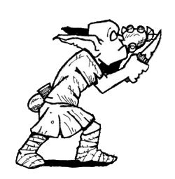

Scarlet Horizons
Kobolds

• No. Enc: 2d4 (3d10)
• Alignment: Chaotic
• Movement: 30'
• Armor Class: 7
• Hit Dice: 1-1 (typically 2-4 HP)
• BAB +0
• Attacks: by weapon
• Damage: By single weapon attack, -1 to damage
• Save: F3
• Morale: 10
• Hoard: 2d6 chroma, 1d4-1 royals, 1d4+1 copper (35% it's Red Cuprous)
Experience Yielded: 65 per kobold defeated
Anytime ten or more kobolds are found together, one of them will be a 4+3 HD specimen with 31 HP with 1d4+3 royals, 2d4+4 chroma, 1d4+4 copper (15% it's Red Cuprous). This leader will have the same Morale and saving throws as its fellows. A defeated leader kobold is worth 245 xp.
Bugbears are disciplined combatants and particularly dangerous in groups.